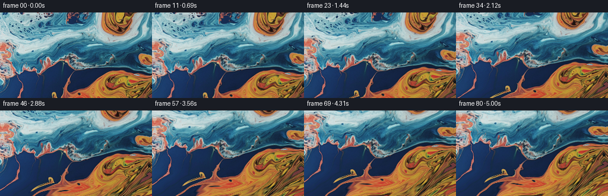
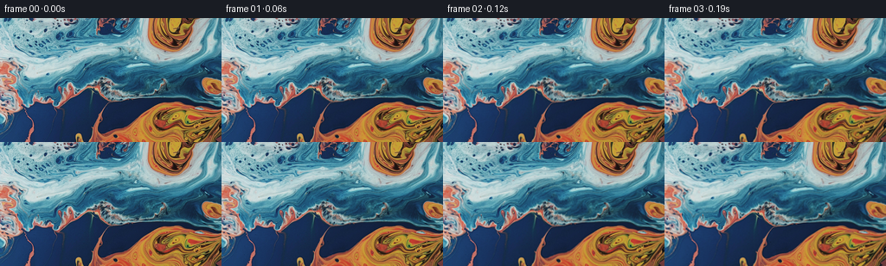

CODING AGENTS AS PIXEL WORLD MODELS
traex/GPT-6.1-Sol · 0004_s4
点击播放 · 原生 RGB 像素
逐轮保存的候选
回放视频、检查图与代码变化。
每份候选均可单独播放。实际图片检查记录在下方工具轨迹中。
候选 01播放与检查图
点击播放 · 原生 RGB 像素


展开代码变化
--- 上一保存版本
+++ 本次保存版本
@@ -0,0 +1,143 @@
+"""A small, deterministic image-based macro-liquid animation.
+
+The supplied photograph is the material texture. A divergence-free flow transports
+its pigment and fine detail; a projective camera slowly pitches down over it.
+Only local numeric image operations are used.
+"""
+from pathlib import Path
+import numpy as np
+from PIL import Image
+from artifact_io import save
+
+ROOT = Path(__file__).resolve().parent
+
+
+def bilinear(a, x, y):
+ h, w = a.shape[:2]
+ x = np.clip(x, 0, w - 1.001)
+ y = np.clip(y, 0, h - 1.001)
+ ix, iy = x.astype(np.int32), y.astype(np.int32)
+ tx, ty = x - ix, y - iy
+ if a.ndim == 3:
+ tx, ty = tx[..., None], ty[..., None]
+ return (a[iy, ix] * (1-tx) * (1-ty) + a[iy, ix+1] * tx * (1-ty)
+ + a[iy+1, ix] * (1-tx) * ty + a[iy+1, ix+1] * tx * ty)
+
+
+def reflect(x, size):
+ z = np.mod(x, 2*(size-1))
+ return np.where(z > size-1, 2*(size-1)-z, z)
+
+
+def cubic_weight(x):
+ a = -0.5
+ x = np.abs(x)
+ return np.where(x <= 1, (a+2)*x**3-(a+3)*x**2+1,
+ np.where(x < 2, a*x**3-5*a*x**2+8*a*x-4*a, 0))
+
+
+def bicubic(a, x, y):
+ h, w = a.shape[:2]
+ ix, iy = np.floor(x).astype(np.int32), np.floor(y).astype(np.int32)
+ out = np.zeros(x.shape+(3,), np.float64)
+ for j in range(-1, 3):
+ wy = cubic_weight(y-(iy+j))
+ sy = np.clip(iy+j, 0, h-1)
+ for i in range(-1, 3):
+ weight = wy*cubic_weight(x-(ix+i))
+ out += a[sy, np.clip(ix+i,0,w-1)] * weight[...,None]
+ return out
+
+
+def photograph_continuation(image, x, y):
+ # Continue the same bottom pigment field just past the visible frame.
+ # The sloped continuation carries the warm lower-right region leftward.
+ d = np.maximum(y - 143., 0)
+ source_y = np.where(y > 143, 143 - .52*d, y)
+ source_x = x + 1.85*d
+ # Mild non-periodic detail bending in the newly exposed material only.
+ fade = 1 - np.exp(-d/15.)
+ source_x += fade * (2.1*np.sin(.073*x+.085*d) + 1.2*np.sin(.16*x-.13*d))
+ source_y += fade * (1.15*np.sin(.10*x+.16*d))
+ return bicubic(image, reflect(source_x,256), reflect(source_y,144))
+
+
+def velocity(x, y, t):
+ # Gaussian stream-functions give locally circulating, incompressible flow.
+ u = np.zeros_like(x)
+ v = np.zeros_like(y)
+ vortices = [(70.,83.,53., .094), (184.,132.,57.,-.087),
+ (184.,17.,37., .075), (122.,153.,33., .076),
+ (33.,27.,38.,-.044)]
+ for n, (cx,cy,r,omega) in enumerate(vortices):
+ cx += 2.2*np.sin(.22*t+n) - 2.2*np.sin(n)
+ cy += 1.7*np.sin(.26*t+.6*n) - 1.7*np.sin(.6*n)
+ dx, dy = x-cx, y-cy
+ e = np.exp(-(dx*dx+dy*dy)/(2*r*r))
+ strength = omega * (.92+.08*np.cos(.63*t+n))
+ u += -strength*dy*e
+ v += strength*dx*e
+ # Broad traveling surface currents, no random frame-to-frame noise.
+ u += .39*np.sin(.046*y-.38*t) + .14*np.sin(.085*y+.6*t)
+ v += .32*np.sin(.039*x+.32*t) + .13*np.sin(.081*x-.45*t)
+ return u, v
+
+
+def generate():
+ image = np.asarray(Image.open(ROOT/'first_frame.png').convert('RGB'),dtype=np.float64)
+ H, W = image.shape[:2]
+ assert (H,W) == (144,256)
+ # Transport inverse material coordinates instead of repeatedly resampling
+ # RGB, so photographic sharpness survives the complete five-second shot.
+ margin = 52
+ gh, gw = 292, 360
+ gy, gx = np.mgrid[0:gh,0:gw].astype(np.float64)
+ X, Y = gx-margin, gy-margin
+ mx, my = X.copy(), Y.copy()
+ yy, xx = np.mgrid[0:H,0:W].astype(np.float64)
+ frames = [image.astype(np.uint8)]
+ dt = 1/16
+ for k in range(1,81):
+ t = k*dt
+ # Backward characteristic step, midpoint accurate.
+ u1,v1 = velocity(X,Y,t)
+ u2,v2 = velocity(X-u1*dt*.5,Y-v1*dt*.5,t-dt*.5)
+ bx, by = gx-u2*dt, gy-v2*dt
+ mx = bilinear(mx,bx,by)
+ my = bilinear(my,bx,by)
+ # Smooth start and end; mostly uniform speed through the central shot.
+ s = t/5.
+ ease = s - np.sin(2*np.pi*s)/(2*np.pi)
+ theta = .151*ease
+ f = 250.
+ dx,dy = xx-127.5,yy-71.5
+ den = f*np.cos(theta)-dy*np.sin(theta)
+ camx = 127.5+f*dx/den
+ camy = 71.5+f*(dy*np.cos(theta)+f*np.sin(theta))/den
+ material_x = bilinear(mx,camx+margin,camy+margin)
+ material_y = bilinear(my,camx+margin,camy+margin)
+ # A subpixel, coherent capillary ripple changes the glints rather than
+ # dissolving the source or inventing unrelated objects.
+ ramp = 1-np.exp(-t/1.2)
+ material_x += .35*ramp*(np.sin(.21*camy+.11*camx-1.1*t)
+ + .45*np.sin(.33*camy-.12*camx+.81*t))
+ material_y += .30*ramp*(np.sin(.16*camx-.075*camy+.93*t)
+ + .40*np.sin(.29*camx+.15*camy-1.07*t))
+ rgb = photograph_continuation(image,material_x,material_y)
+ # Low-amplitude moving illumination on the wet reflective surface.
+ glint = (.010*np.sin(.035*material_x+.048*material_y-.7*t)
+ + .006*np.sin(.079*material_y-.052*material_x+.9*t))*ramp
+ rgb *= (1+glint[...,None])
+ frames.append(np.clip(np.rint(rgb),0,255).astype(np.uint8))
+ return np.stack(frames)
+
+
+if __name__ == '__main__':
+ frames = generate()
+ save(frames, ROOT)
+ np.save(ROOT/'generated_rgb.npy',frames)
+ print('Saved',frames.shape,frames.dtype)
+ print('Frame 00 identical:',np.array_equal(frames[0],np.asarray(Image.open(ROOT/'first_frame.png').convert('RGB'))))
+ step = np.abs(np.diff(frames.astype(np.float32),axis=0))
+ print('Temporal mean absolute RGB change:',float(step.mean()))
+ print('Per-frame range:',float(step.mean((1,2,3)).min()),float(step.mean((1,2,3)).max()))
可观测工具轨迹
实际执行的命令与返回图片。
命令 1exit 0
/bin/bash -lc 'ls -la && cat prompt.txt && cat GENERATION_RULES.md'
命令 2exit 0
/bin/bash -lc "cat task_spec.json && cat artifact_io.py && python - <<'PY'
from PIL import Image
import numpy as np
im=np.asarray(Image.open('first_frame.png').convert('RGB'))
print('shape',im.shape)
print('min max',im.min((0,1)),im.max((0,1)))
print('mean',im.mean((0,1)))
im=Image.fromarray(im).resize((64,36)); a=np.asarray(im)
# classify pixel colors: blue cyan orange red golden dark white
chars=[]
for row in a:
s=''
for r,g,b in row.astype(float):
if max(r,g,b)<25:c=' '
elif max(r,g,b)<60:c='.'
elif min(r,g,b)>190:c='W'
elif b>r*1.2 and b>g*1.1:c='B' if b>110 else 'b'
elif g>r*1.2 and b>r*1.2:c='C'
elif r>b*1.5 and g>b*1.3:c='O' if r>160 else 'o'
elif r>g*1.4:c='R'
else:c=':'
s+=c
chars.append(s)
print('\\n'.join(chars))
print('RGB coarse 16 x9')
print(np.asarray(im.resize((16,9))).tolist())
PY"命令 3exit 0
/bin/bash -lc "python - <<'PY'
from PIL import Image
import numpy as np
im=np.asarray(Image.open('first_frame.png').convert('RGB'),dtype=float)
# image gradients characterize scale and color surface shape
for step in [1,2,4,8,16]:
print('diff',step,np.mean(abs(im[:,step:]-im[:,:-step])),np.mean(abs(im[step:]-im[:-step])))
for y in range(0,144,8):
s=''
for x in range(0,256,4):
a=im[y:y+4,x:x+4].mean((0,1));r,g,b=a
s+=('O' if r-b>55 and r-g>20 else 'r' if r-b>20 else 'C' if g-r>15 and b>135 else 'B' if b-r>20 and b>95 else 'b' if b-r>15 else '*' if min(a)>170 else '.')
print('%3d'%y,s)
print('dependencies')
import importlib.util
for p in ['scipy','cv2','numpy','PIL']: print(p, bool(importlib.util.find_spec(p)))
PY"命令 4exit 0
/bin/bash -lc "cat > generate.py <<'PY'
\"\"\"A small, deterministic image-based macro-liquid animation.
The supplied photograph is the material texture. A divergence-free flow transports
its pigment and fine detail; a projective camera slowly pitches down over it.
Only local numeric image operations are used.
\"\"\"
from pathlib import Path
import numpy as np
from PIL import Image
from artifact_io import save
ROOT = Path(__file__).resolve().parent
def bilinear(a, x, y):
h, w = a.shape[:2]
x = np.clip(x, 0, w - 1.001)
y = np.clip(y, 0, h - 1.001)
ix, iy = x.astype(np.int32), y.astype(np.int32)
tx, ty = x - ix, y - iy
if a.ndim == 3:
tx, ty = tx[..., None], ty[..., None]
return (a[iy, ix] * (1-tx) * (1-ty) + a[iy, ix+1] * tx * (1-ty)
+ a[iy+1, ix] * (1-tx) * ty + a[iy+1, ix+1] * tx * ty)
def reflect(x, size):
z = np.mod(x, 2*(size-1))
return np.where(z > size-1, 2*(size-1)-z, z)
def cubic_weight(x):
a = -0.5
x = np.abs(x)
return np.where(x <= 1, (a+2)*x**3-(a+3)*x**2+1,
np.where(x < 2, a*x**3-5*a*x**2+8*a*x-4*a, 0))
def bicubic(a, x, y):
h, w = a.shape[:2]
ix, iy = np.floor(x).astype(np.int32), np.floor(y).astype(np.int32)
out = np.zeros(x.shape+(3,), np.float64)
for j in range(-1, 3):
wy = cubic_weight(y-(iy+j))
sy = np.clip(iy+j, 0, h-1)
for i in range(-1, 3):
weight = wy*cubic_weight(x-(ix+i))
out += a[sy, np.clip(ix+i,0,w-1)] * weight[...,None]
return out
def photograph_continuation(image, x, y):
# Continue the same bottom pigment field just past the visible frame.
# The sloped continuation carries the warm lower-right region leftward.
d = np.maximum(y - 143., 0)
source_y = np.where(y > 143, 143 - .52*d, y)
source_x = x + 1.85*d
# Mild non-periodic detail bending in the newly exposed material only.
fade = 1 - np.exp(-d/15.)
source_x += fade * (2.1*np.sin(.073*x+.085*d) + 1.2*np.sin(.16*x-.13*d))
source_y += fade * (1.15*np.sin(.10*x+.16*d))
return bicubic(image, reflect(source_x,256), reflect(source_y,144))
def velocity(x, y, t):
# Gaussian stream-functions give locally circulating, incompressible flow.
u = np.zeros_like(x)
v = np.zeros_like(y)
vortices = [(70.,83.,53., .094), (184.,132.,57.,-.087),
(184.,17.,37., .075), (122.,153.,33., .076),
(33.,27.,38.,-.044)]
for n, (cx,cy,r,omega) in enumerate(vortices):
cx += 2.2*np.sin(.22*t+n) - 2.2*np.sin(n)
cy += 1.7*np.sin(.26*t+.6*n) - 1.7*np.sin(.6*n)
dx, dy = x-cx, y-cy
e = np.exp(-(dx*dx+dy*dy)/(2*r*r))
strength = omega * (.92+.08*np.cos(.63*t+n))
u += -strength*dy*e
v += strength*dx*e
# Broad traveling surface currents, no random frame-to-frame noise.
u += .39*np.sin(.046*y-.38*t) + .14*np.sin(.085*y+.6*t)
v += .32*np.sin(.039*x+.32*t) + .13*np.sin(.081*x-.45*t)
return u, v
def generate():
image = np.asarray(Image.open(ROOT/'first_frame.png').convert('RGB'),dtype=np.float64)
H, W = image.shape[:2]
assert (H,W) == (144,256)
# Transport inverse material coordinates instead of repeatedly resampling
# RGB, so photographic sharpness survives the complete five-second shot.
margin = 52
gh, gw = 292, 360
gy, gx = np.mgrid[0:gh,0:gw].astype(np.float64)
X, Y = gx-margin, gy-margin
mx, my = X.copy(), Y.copy()
yy, xx = np.mgrid[0:H,0:W].astype(np.float64)
frames = [image.astype(np.uint8)]
dt = 1/16
for k in range(1,81):
t = k*dt
# Backward characteristic step, midpoint accurate.
u1,v1 = velocity(X,Y,t)
u2,v2 = velocity(X-u1*dt*.5,Y-v1*dt*.5,t-dt*.5)
bx, by = gx-u2*dt, gy-v2*dt
mx = bilinear(mx,bx,by)
my = bilinear(my,bx,by)
# Smooth start and end; mostly uniform speed through the central shot.
s = t/5.
ease = s - np.sin(2*np.pi*s)/(2*np.pi)
theta = .151*ease
f = 250.
dx,dy = xx-127.5,yy-71.5
den = f*np.cos(theta)-dy*np.sin(theta)
camx = 127.5+f*dx/den
camy = 71.5+f*(dy*np.cos(theta)+f*np.sin(theta))/den
material_x = bilinear(mx,camx+margin,camy+margin)
material_y = bilinear(my,camx+margin,camy+margin)
# A subpixel, coherent capillary ripple changes the glints rather than
# dissolving the source or inventing unrelated objects.
ramp = 1-np.exp(-t/1.2)
material_x += .35*ramp*(np.sin(.21*camy+.11*camx-1.1*t)
+ .45*np.sin(.33*camy-.12*camx+.81*t))
material_y += .30*ramp*(np.sin(.16*camx-.075*camy+.93*t)
+ .40*np.sin(.29*camx+.15*camy-1.07*t))
rgb = photograph_continuation(image,material_x,material_y)
# Low-amplitude moving illumination on the wet reflective surface.
glint = (.010*np.sin(.035*material_x+.048*material_y-.7*t)
+ .006*np.sin(.079*material_y-.052*material_x+.9*t))*ramp
rgb *= (1+glint[...,None])
frames.append(np.clip(np.rint(rgb),0,255).astype(np.uint8))
return np.stack(frames)
if __name__ == '__main__':
frames = generate()
save(frames, ROOT)
np.save(ROOT/'generated_rgb.npy',frames)
print('Saved',frames.shape,frames.dtype)
print('Frame 00 identical:',np.array_equal(frames[0],np.asarray(Image.open(ROOT/'first_frame.png').convert('RGB'))))
step = np.abs(np.diff(frames.astype(np.float32),axis=0))
print('Temporal mean absolute RGB change:',float(step.mean()))
print('Per-frame range:',float(step.mean((1,2,3)).min()),float(step.mean((1,2,3)).max()))
PY
python generate.py"命令 5exit 0
/bin/bash -lc "python - <<'PY'
import numpy as np
from PIL import Image
f=np.load('generated_rgb.npy')
for i in [0,20,40,60,80]:
a=np.asarray(Image.fromarray(f[i]).resize((48,27))).astype(float)
print('\\nFRAME',i,'mean',f[i].mean((0,1)).round(1),'gradient',np.abs(np.diff(f[i].astype(float),axis=0)).mean().round(2),np.abs(np.diff(f[i].astype(float),axis=1)).mean().round(2))
for row in a:
s=''
for r,g,b in row:
s+= 'O' if r-b>50 and r-g>20 else 'r' if r-b>20 else 'C' if g-r>15 and b>135 else 'B' if b-r>20 and b>95 else 'b' if b-r>15 else '*' if min(r,g,b)>170 else '.'
print(s)
print('files');
PY
ls -lh pixels.npz index.html generated_rgb.npy"命令 6exit 0
/bin/bash -lc "python - <<'PY'
from pathlib import Path
import numpy as np
from PIL import Image
p=Path('.')
f=np.load('generated_rgb.npy')
a=np.load('pixels.npz')['pixels']
rgb=np.stack(((a>>16)&255,(a>>8)&255,a&255),axis=-1).transpose(2,0,1,3).astype(np.uint8)
assert f.shape==(81,144,256,3) and f.dtype==np.uint8
assert np.array_equal(rgb,f)
assert np.array_equal(f[0],np.asarray(Image.open('first_frame.png').convert('RGB')))
assert len(list((p/'frames').glob('*.png')))==81
print('Artifact validation passed: 81 RGB frames, 256x144, 16 fps.')
PY"保存候选 1 份；完成命令 6 次；可验证图片返回 0 张。原始 API 响应与完整日志保留在本地。